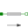

WhyArrowsUse of arrows in Mechanics.Translational |
|
Diagram
{kind=link}
Information
This information is part of the Modelica Standard Library maintained by the Modelica Association.
When using the models of the translational sublibrary it is recommended to make sure that all arrows point in the same direction because then all component have the same reference system. In the example the distance from flange_a of Rod1 to flange_b of Rod2 is 2 m. The distance from flange_a of Rod1 to flange_b of Rod3 is also 2 m though it is difficult to see that. Without the arrows it would be almost impossible to notice. That all arrows point in the same direction is a sufficient condition for an easy use of the library. There are cases where horizontally flipped models can be used without problems.
Components (13)
| fixed |
Type: Fixed |
|
|---|---|---|
|  | rod1 |
Type: Rod |
| rod2 |
Type: Rod |
|
| rod3 |
Type: Rod |
|
| positionSensor2 |
Type: PositionSensor |
|
| positionSensor1 |
Type: PositionSensor |
|
| positionSensor3 |
Type: PositionSensor |
|
| fixed1 |
Type: Fixed |
|
| spring1 |
Type: Spring |
|
| mass1 |
Type: Mass |
|
| fixed2 |
Type: Fixed |
|
| spring2 |
Type: Spring |
|
| inertia2 |
Type: Mass |